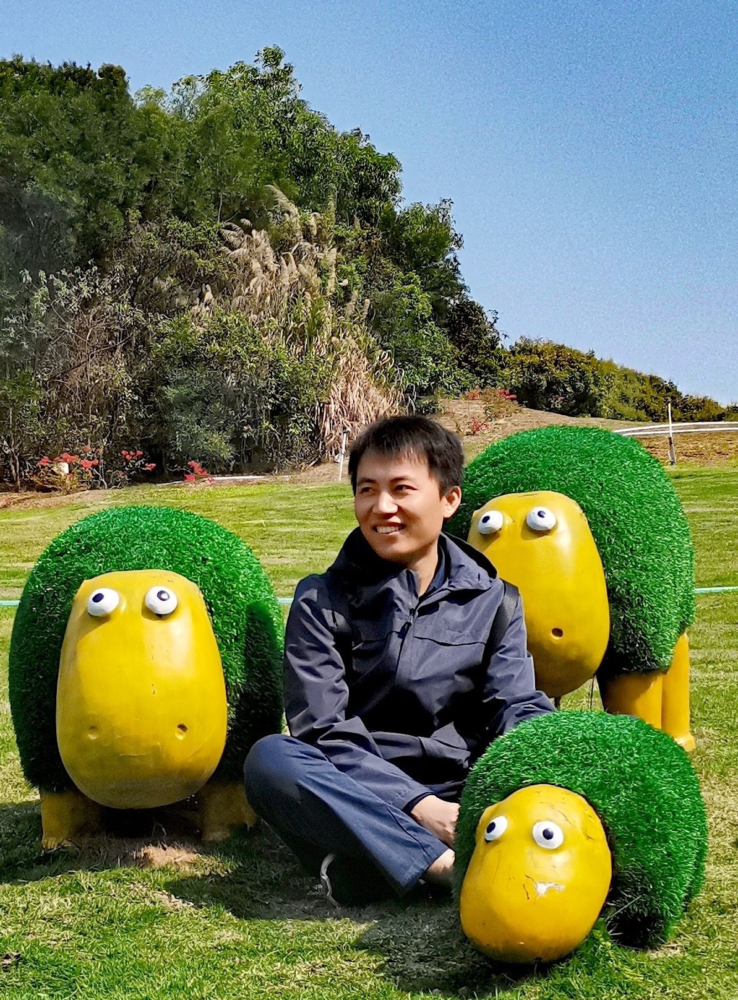

Xiang Gao 高祥
Associate Professor
School of Computer Science, Beihang University, China
- xiang_gao [at] buaa.edu.cn
- gaoxiang9430 [at] gmail.com
 Google Scholar
Google ScholarAbout Me
I am an Associate Professor at Beihang University. Before joining Beihang, I was a postdoc at the National University of Singapore under the supervision of Abhik Roychoudhury, where I also completed my PhD in the same group. I received my bachelor's degree in Computer Science (Elite Class) from Shandong University in 2016.
My research focuses on using program analysis, test generation, and formal methods to help users fix software bugs and write programs. I design techniques to improve the quality of automatically generated programs.
Some of my projects have been carried out in collaboration with Fujitsu Laboratories of America (with Mukul Prasad) and Microsoft Research (with Nachiappan Nagappan and Sumit Gulwani).
Research interests:
- Program Analysis
- Software Security
- Automated Program Repair
News
- Sep 2025 Our ICSME'25 paper Code Property Graph Meets Typestate: A Scalable Framework to Behavioral Bug Detection won the IEEE TCSE Distinguished Paper Award.Award
- Jun 2024 Our FSE'24 paper ProveNFix: Temporal Property guided Program Repair won the ACM SIGSOFT Distinguished Paper Award.Award
- Mar 2024 Our SANER'24 paper Investigating and Detecting Silent Bugs in PyTorch Programs won the IEEE TCSE Distinguished Paper Award.Award
- Feb 2024 Our ICSE'24 paper Modularizing while Training: A New Paradigm for Modularizing DNN Models won the ACM SIGSOFT Distinguished Paper Award.Award
- Jan 2024 Our paper ProveNFix: Temporal Property guided Program Repair has been accepted by FSE'24.
- Dec 2023 Our paper Investigating White-Box Attacks for On-Device Models has been accepted by ICSE'24.
Show older news
- Nov 2023 Our paper Reusing Convolutional Neural Network Models through Modularization and Composition has been accepted by TOSEM.
- Aug 2023 Our paper Automated Fixing of Web UI Tests via Iterative Element Matching has been accepted by ASE'23.
- Jun 2023 Our paper Modularizing while Training: A New Paradigm for Modularizing DNN Models has been accepted by ICSE'24.
- May 2023 Our paper ModelObfuscator: Obfuscating Model Information to Protect Deployed ML-based Systems has been accepted by ISSTA'23.
- Dec 2022 Two papers have been accepted by ICSE'23.
- Sep 2022 Invited to serve on the program committee of ICSE 2024 research papers track.
- Aug 2022 Our paper Patching Weak Convolutional Neural Network Models through Modularization and Composition has been accepted by ASE'22.
- Apr 2022 Our paper Program Vulnerability Repair via Inductive Inference has been accepted by ISSTA'22.
- Dec 2021 I joined Beihang University as an Associate Professor.
- Dec 2021 Our paper Trust Enhancement Issues in Program Repair has been accepted by ICSE'22.
- Sep 2021 I successfully defended my PhD thesis Overfitting in Program Repair and Program Synthesis.
- Jul 2021 Our paper "Scalable Fuzzing of Program Binaries with E9AFL" has been accepted by ASE'21 demonstration track.
- Jul 2021 Our artifact for the paper Automated Patch Backporting in Linux (Experience Paper) won the Distinguished Artifact Award.Award
- Jul 2021 Our paper "APIfix: Output-Oriented Program Synthesis for Combating Breaking Changes in Libraries" has been conditionally accepted by OOPSLA'21.
- Apr 2021 Our paper Automated Patch Backporting in Linux (Experience Paper) has been accepted by ISSTA'21.